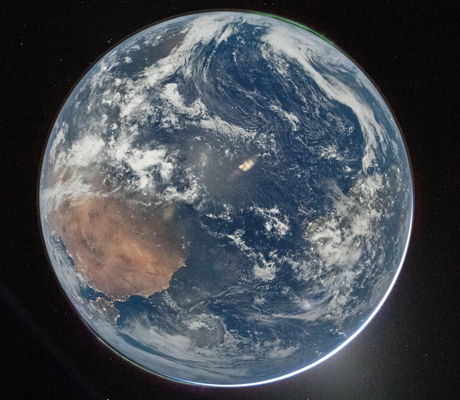

A daily portrait of human progress
The exploration of nature is a full‑planet response to the human condition.
Every day, this project gathers the newest advances in the technologies reshaping our future — and celebrates them as a shared achievement of our common curiosity and intelligence.
See today’s progress ↓Six channels of change
Each channel updates daily with headlines and short summaries, linked straight to the source.
Artificial Intelligence
AI put to work in science and engineering — new materials, proteins, medicines, and discoveries.
Open channel →Advanced Materials
New molecules, metals, and polymers for cleaner energy, water, and air.
Open channel →Synthetic Biology
Engineered organisms and programmed DNA — cells built for computing, data storage, and chemical synthesis.
Open channel →Energy & Water
Science and technology for sustainable energy and clean, fresh water for more of humanity.
Open channel →Space Exploration
New missions, spacecraft, and technologies — NASA, ESA, ISRO, JAXA, SpaceX, CNES, and more.
Open channel →Astronomy & Astrophysics
New telescopes, satellites, and discoveries across the cosmos.
Open channel →Why this project exists
We are building a platform to celebrate progress in science and technology across the entire world — in the United States, Europe, China, India, across Asia and the Global South. The drive to understand nature belongs to no single nation. It is a beautiful expression of our common humanity: people everywhere, working together to build a more advanced and more humane future using the curiosity and intelligence we share.
The headlines below are gathered automatically each day from trusted science publications and research institutions around the world, then sorted into channels. Follow any link to read the full story at its source.